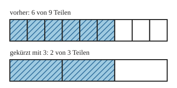

Kürzen
Mit einem KI-Tutor lernen
Ein KI-Tutor erklärt dir diese Seite und hilft dir bei den Übungen. Wähl deinen Assistenten:
Mit Claude öffnen Mit ChatGPT öffnen Mit Mistral Vibe öffnen
Du nutzt dein eigenes Konto beim Anbieter. Der Assistent ist kein Angebot von lernapps.net: lernapps liefert nur Inhalte und Übungen. Die Wahl gilt für alle Seiten, nur auf diesem Gerät.
Einstieg
Beim Erweitern hast du jedes Teil feiner geschnitten. Jetzt gehst du den Weg zurück: Du legst kleine Teile zu größeren zusammen. Das geht nur, wenn sich die Teile genau zusammenlegen lassen. Dafür brauchst du eine Zahl, die in Zähler und Nenner hineinpasst. Das kennst du aus der Teilbarkeit.
Anschaulich erklärt

Der obere Streifen ist das Ganze mit 9 Teilen, der untere dasselbe Ganze mit 3 Teilen. Vergleiche, wie lang das Gestreifte jeweils ist.
Quelle: eigene Zeichnung. Lizenz: CC-BY-4.0.Je 3 kleine Teile werden zu einem größeren Teil zusammengelegt. Aus 9 Teilen werden Teile, aus 6 gestreiften Teilen werden gestreifte Teile. Das Gestreifte ist gleich lang geblieben. Also gilt:
- kürzen
Einen Bruch kürzen heißt: Zähler und Nenner durch dieselbe Zahl teilen. Der Bruch wird einfacher, hat aber den gleichen Wert. Kürzen ist das Gegenteil von Erweitern.
- gemeinsamer Teiler
Ein gemeinsamer Teiler von Zähler und Nenner ist eine Zahl, durch die beide ohne Rest teilbar sind. Nur durch so eine Zahl kannst du kürzen.
Teilen, nicht abziehen
Zähler und Nenner werden beide durch dieselbe Zahl geteilt. Wenn du etwas abziehst, ändert sich der Anteil. Ein Bruch ist vollständig gekürzt, wenn Zähler und Nenner keinen gemeinsamen Teiler mehr außer 1 haben.
Ausprobieren
Der obere Streifen zeigt und bleibt immer gleich. Der untere Streifen ist genauso lang. Mit „+“ wählst du den nächsten Teiler, mit „−“ den vorigen. Es gibt nur Teiler, durch die sich Zähler und Nenner ohne Rest teilen lassen. Dann werden immer so viele kleine Teile zu einem großen Teil zusammengelegt, wie der Teiler sagt. Achte darauf, was gleich bleibt und was sich ändert, und was bei Zähler und Nenner passiert.
oben: 12 von 18 Teilen
unten: durch 1 gekürzt, 12 von 18 Teilen
Zähler: 12 : 1 = 12
Nenner: 18 : 1 = 18
12/18 = 12/18
Zwei gleich lange Streifen untereinander. Oben steht . Unten sind je mehrere Teile zusammengelegt: mit dem Teiler 2 wird daraus , mit 3 wird es , mit 6 wird es . Weitere Teiler gibt es nicht, denn nur 1, 2, 3 und 6 teilen sowohl 12 als auch 18. Das Gestreifte bleibt gleich lang.
Beispiel
12/18 vollständig kürzen
12 und 18 sind beide durch 6 teilbar. Zähler: . Nenner: . Also ist . Mehr geht nicht: 2 und 3 haben keinen gemeinsamen Teiler außer 1.
Übung
Übung
Lösung
4 und 6 sind beide durch 2 teilbar. Du kannst noch zu kürzen.
3 und 9 sind beide durch 3 teilbar. Du kannst noch zu kürzen.
richtige Antwort
5 und 8 haben außer 1 keinen gemeinsamen Teiler. Der Bruch ist vollständig gekürzt.
6 und 10 sind beide durch 2 teilbar. Du kannst noch zu kürzen.
Bei haben 5 und 8 keinen gemeinsamen Teiler außer 1. Die anderen Brüche kannst du noch kürzen.
Mehr dazu:
Übung
Drei Beispielaufgaben, jede mit ihrer Lösung:
Aufgabe Nr. 1
Kürze den Bruch mit 3. Wie lautet der neue Zähler?
Tipp
Teile den Zähler 6 durch 3.
Lösung
- 6 und 18 sind beide durch 3 teilbar.
- Zähler: 6 : 3 = 2. Nenner: 18 : 3 = 6. Der Bruch heißt jetzt 2/6.
Richtige Antwort: 2
Aufgabe Nr. 2
Kürze den Bruch mit 2. Wie lautet der neue Zähler?
Tipp
Teile den Zähler 16 durch 2.
Lösung
- 16 und 20 sind beide durch 2 teilbar.
- Zähler: 16 : 2 = 8. Nenner: 20 : 2 = 10. Der Bruch heißt jetzt 8/10.
Richtige Antwort: 8
Aufgabe Nr. 3
Kürze den Bruch mit 2. Wie lautet der neue Zähler?
Tipp
Teile den Zähler 12 durch 2.
Lösung
- 12 und 18 sind beide durch 2 teilbar.
- Zähler: 12 : 2 = 6. Nenner: 18 : 2 = 9. Der Bruch heißt jetzt 6/9.
Richtige Antwort: 6
Übung
Drei Beispielaufgaben, jede mit ihrer Lösung:
Aufgabe Nr. 1
Kürze so weit wie möglich. Wie lautet der Nenner des vollständig gekürzten Bruchs?
Tipp
Suche eine Zahl, durch die 16 und 20 beide teilbar sind, und teile beide durch sie.
Lösung
- 16 und 20 sind beide durch 4 teilbar, und es gibt keine größere Zahl, die in beide passt.
- Nenner: 20 : 4 = 5. Zähler: 16 : 4 = 4. Der Bruch heißt 4/5.
Richtige Antwort: 5
Aufgabe Nr. 2
Kürze so weit wie möglich. Wie lautet der Nenner des vollständig gekürzten Bruchs?
Tipp
Suche eine Zahl, durch die 16 und 24 beide teilbar sind, und teile beide durch sie.
Lösung
- 16 und 24 sind beide durch 8 teilbar, und es gibt keine größere Zahl, die in beide passt.
- Nenner: 24 : 8 = 3. Zähler: 16 : 8 = 2. Der Bruch heißt 2/3.
Richtige Antwort: 3
Aufgabe Nr. 3
Kürze so weit wie möglich. Wie lautet der Nenner des vollständig gekürzten Bruchs?
Tipp
Suche eine Zahl, durch die 12 und 24 beide teilbar sind, und teile beide durch sie.
Lösung
- 12 und 24 sind beide durch 12 teilbar, und es gibt keine größere Zahl, die in beide passt.
- Nenner: 24 : 12 = 2. Zähler: 12 : 12 = 1. Der Bruch heißt 1/2.
Richtige Antwort: 2